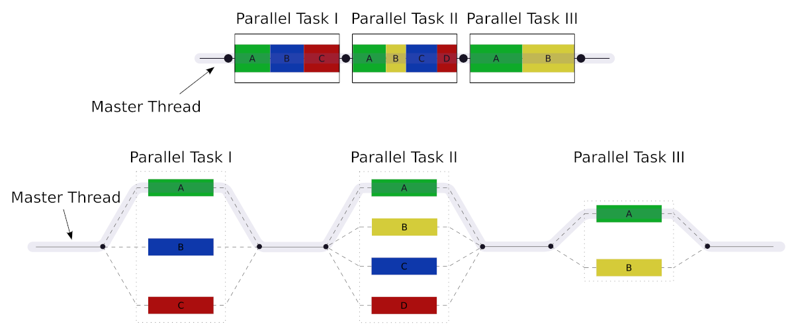

Veljko Petrović
v1.1.0
Model deljene memorije

| Promenljiva | Tip vrednosti | Značenje |
|---|---|---|
| OMP_NUM_THREADS | Broj | Broj istovremenih niti |
| OMP_DYNAMIC | Bulova | Dinamički menja broj istovremenih niti. Može povećati efikasnost kroz adaptaciju, ali ima cenu u performansama. |
| OMP_SCHEDULE | Reč.Broj | Tip rasporeda izvršavanja praćen dimenzijom particije izvršavanja. Više o tome kasnije. |
| OMP_NESTED | Bulova | Da li imamo ugnježdeni paralelizam ili ne. Može da nam pomogne da upravljamo distribucijom niti u komplikovanim situacijama, ali ima fiksnu cenu u overhead-u. |
| Promenljiva | Tip vrednosti | Značenje |
|---|---|---|
| OMP_CANCELLATION | Bulova | Da li ‘cancel’ direktiva radi ili ne. |
| OMP_MAX_ACTIVE_LEVELS | Broj | Koliko ugnježdenih regiona je dozvoljeno. Podrazumevano je da je neograničeno. |
| OMP_MAX_TASK_PRIORITY | Broj | Najveći sistemski prioritet koji se dodeljuje zadacima. |
| OMP_STACKSIZE | Broj praćen sa B, K, M, ili G | Veličina sistemskog steka za jednu nit izvršavanja |
omp.hint n = omp_get_num_threads(); // koliko ima niti
int k = omp_get_thread_num(); // koja je tekuća nit koja ovo izvršavaPrimetite omp_ prefiks i snake case imena umesto camel
case
C je fundamentalno napravljen sa idejom jednostrukog
izvršavanjaint main(){
int x = 0, y = 0;
pthread_t inc_x_thread;
if(pthread_create(&inc_x_thread, NULL, inc_x, &x)){
fprintf(stderr, "Ne mogu da napravim nit\n");
return 1;
}
while(++y < 100);
printf("Inkrementacija Y gotova.\n");
if(pthread_join(inx_x_thread, NULL)){
fprintf(stderr, "Ne mogu da sačekam nit\n");
return 2;
}
printf("x: %d, y: %d\n", x, y);
return 0;
}git clone git@github.com:gcc-mirror/gcc.git i već se
bavimo razvojem kompajlera.#pragma#pragma je jednostavna ideja#pragma direktive su eksplicitno tu da budu
nestandardne: svaki kompajler je potpuno slobodan da doda bilo koji broj
svojih pragmi koje rade šta god taj kompajler hoće.| Od GCC verzije | Podržan OpenMP standard | Na jezicima |
|---|---|---|
| 4.2.0 | 2.5 | C/C++/Fortran |
| 4.4.0 | 3 | C/C++/Fortran |
| 4.7.0 | 3.1 | C/C++/Fortran |
| 4.9.0 | 4 | C/C++ |
| 4.9.1 | 4 | C/C++/Fortran |
| 6.1 | 4.5 | C/C++ |
| 7 | 4.5 | C/C++/Fortran |
| 11 | 5.0 | C/C++ |
#pragma omp#pragma parallel#pragma privateOMP_SCHEDULE promenljive.for
direktive.SCHEDULE mehanizam ima za cilj, jednostavno, da sve
indekse for petlje od 0 do N-1 podeli na neki broj regiona koji se ne
preklapaju.| Ključna reč | Značenje |
|---|---|
| static | Iteracije se dele u komade veličine koja je specificirana, ako je specificirana, u suprotnom se veličina računa tako što se ukupan broj iteracija podeli brojem niti. Zatim se tako definisani regioni dele među nitima koristeći “round robin” pristup. |
| dynamic | Kao prethodno, ali osim na početku, niti se dele u first-come first-served pristupu gde niti traže još posla kada završe rad. |
| guided | Kao prethodno, ali veličina regiona je fleksibilna i proporcionalna je broju nedodeljenih iteracija podeljenih sa brojem dostupnih niti uz minimum ravan podešenoj veličini regiona. |
| auto | Kompajler/runtime bira šta se izvršava i kada. |
| runtime | Omogućava da se schedule podesi iz koda koristeći void omp_set_schedule(omp_sched_t kind, int chunk_size); |
schedule direktive može pratiti ključna
reč monotonic i ključna reč nonmonotonic.Monotonic znači da svaka nit izvršava dodeljene
iteracije u redosledu strogo povećavajuće vrednosti brojačaNonmonotonic znači da svaka nit izvršava dodeljene
iteracije u proizvoljnom, nedeterminističkom redosledu.SPMD modelu: sekcijeERROR: System attempted to parse HTML with regular expression; system returned Cthulhu.Thread A: i++Thread B: i++#pragma omp critical)
definiše blok koda kao kritičan.#pragma omp master) definiše
blok koda koji je takav da ga može izvršiti samo i isključivo glavna
nit.#pragma omp barrier) služi da
natera niti da se sinhronizuju. Gde god da se stavi u kodu definiše
graničnu tačku.#pragma omp single)
definiše blok koda koji se izvršava u samo jednoj niti.nowait dodatka iza single direktive
(#pragma omp single nowait)#pragma reductionreduction pragma sa sintaksom
#pragma reduction(op : var)op operator koji može biti:
+, -, *, &, |, ^, && ||, min, maxvar je promenljiva za rezultatvar = var op izraz#include <stdio.h>
#include <omp.h>
#include <stdlib.h>
int main(){
const int N = 1024;
int i;
double a[N], s = 0;
for(i = 0; i < N; i++) a[i] = 1.0 * i;
#pragma omp parallel for default(shared) private(i) schedule(static, 4) reduction(+ : s)
for(i = 0; i < N; i++){
s = s + a[i];
}
printf("S: %f\n", s);
}declare reduction omp pragme da
se definiše proizvoljni identifikator redukcije\(F(n+2) = F(n+1) + F(n)\) i naravno
\(F(n+3) = F(n+2) + F(n+1) = 2 \cdot F(n+1) + F(n)\)
\(F(n+4) = F(n+3) + F(n+2) = 3 \cdot F(n+1) + 2 \cdot F(n)\)
\(F(n+5) = F(n+4) + F(n+3) = 5 \cdot F(n+1) + 3 \cdot F(n)\)
\(F(n+6) = F(n+3) + F(n+2) = 8 \cdot F(n+1) + 5 \cdot F(n)\)
Stoga, uopšteno: \[ F(n+k) = F(n+1) \cdot F(k) + F(n) \cdot F(k-1) \]